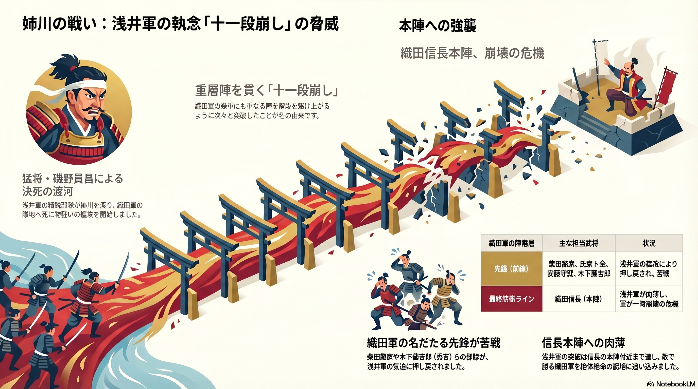

姉川の河原で展開された浅井軍の攻勢は、戦国史においても稀に見る「決死の突撃」でした。上の図解が示す通り、浅井軍は数で勝る織田軍に対し、一点集中の縦深突破戦術を敢行しました。以下に、その戦術的特異性と信長を追い詰めた「恐怖のリアリティ」を詳説します。
■ 猛将・磯野員昌による決死の渡河
浅井軍の先鋒を務めた磯野員昌率いる精鋭部隊は、天然の堀である姉川を渡り、織田軍の陣地へ死に物狂いの猛攻を開始しました。この突撃は、単なる攻撃ではなく、朝倉家との「三代の交誼」や信長の「不義」に対する凄まじい精神力に裏打ちされたものでした。
■ 重層陣を貫く「十一段崩し」の正体
織田軍が敷いた幾重にも重なる守備陣を、階段を駆け上がるように次々と突破したことが名の由来です。最新の研究では「十一段」という数字自体は後世の誇張とされていますが、当時の織田軍が瓦解寸前まで追い込まれたのは紛れもない事実です。
■ 織田軍名だたる先鋒の苦戦
柴田勝家、氏家卜全、安藤守就、そして木下藤吉郎（秀吉）といった、後に天下を支える織田軍の主力武将たちの部隊が、浅井軍の気迫に押し戻され、次々と瓦解していきました。
■ 信長本陣への肉薄と絶体絶命の窮地
浅井軍の突破は、ついに最終防衛ラインである織田信長の本陣付近まで到達しました。数で勝る織田軍をこれほどの窮地に追い込んだのは、中世的な「家の誇り」を懸けた浅井軍の執念が、近代的な織田の軍事組織を一過的に圧倒した結果と言えます。
この凄まじい攻勢を最終的に食い止めたのは、家康による朝倉軍の「陣形の欠陥」の看破と側面攻撃でした。しかし、この「十一段崩し」が与えた衝撃は、後に信長に武力だけでない「権威（公儀）」の活用を血肉化させる大きな教訓となったのです。